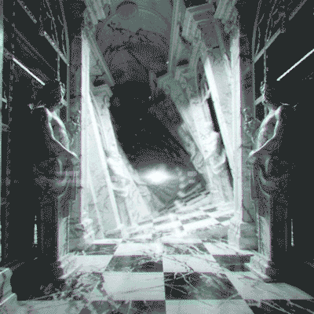

<!DOCTYPE html>
<html lang="en" dir="ltr">
  <head>
    <meta charset="utf-8">
    <title>Liminal Chaos</title>
    <link rel="stylesheet" href="../css/style.css">
    <link href='https://fonts.googleapis.com/css?family=Inconsolata' rel='stylesheet'>
  </head>

  <body>


    <div id="scene">

          


    </div>

    <div id="textbox">

<p>

Another month passes. While things here are not so bad, you still want to get back home.
You feel safe in the tribe trusting you enough to want to help. <br><br>You talk to Maspien.
<br><br>

<i>"The only way for you to get back is to find the orb to summon the archway portal.
Brenil knows more about it, as they've been cur---"</i>
  <br><br>
Brenil walks in and Maspien swallows their words.
  <br><br>
  <i>"What's wrong?"</i> Brenil asks.
<br><br>
Maspien continues, "I will leave you two to talk."
<br>Turning to you, Maspien nods as they leave the hut, "I wish you good luck."
<br><br>

You <a href="CLover.html"><b>ask Brenil for help</b></a>.


</p>
  </div>


  </body>

  </html>
